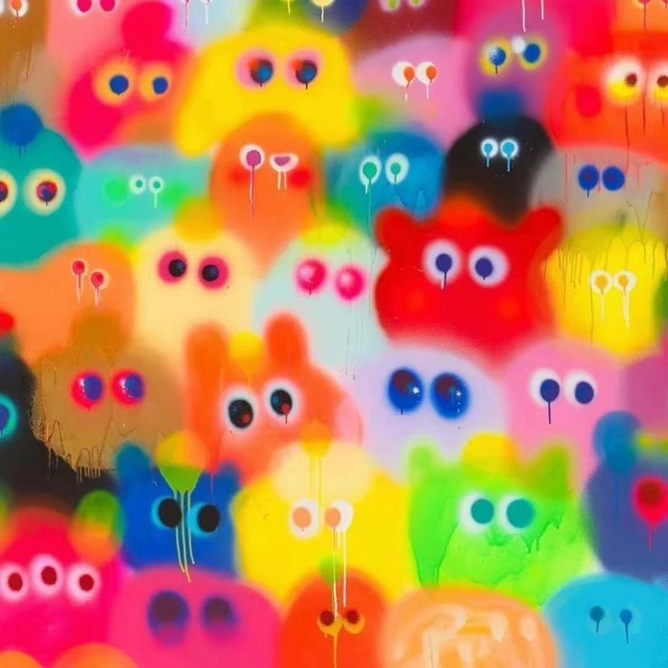

History of Colors
The history of color involves both the development of color theory and the discovery and use of pigments and dyes. Early humans used natural materials like soil, animal fat, and burnt charcoal to create pigments, leading to a basic palette of colors like red, yellow, brown, black, and white. Over time, scientific advancements, exploration, and cultural influences led to the discovery and creation of new colors and a deeper understanding of how colors are perceived and used.
Colorful Gallery

